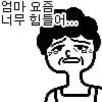
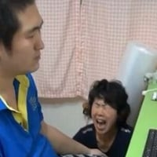

아이고
아들 때문에 새벽에 마음이 찢어지시는 어머니
댓글
그래도 남캐 코스프레 했네
어른들은 저런거 보면 진짜게이(진게) 인줄 알텐데 왜 저런걸 보내는거야..
진게 맞아..
저런거 하는놈이 진게가 아니면 무엇이더냐
자작추
엄마 억장 무너짐
엄마 엉엉 울음


남캐에요 어머니...
저걸 왜 엄마한테 보내냐

아이고 딸아..딸아..
두번이나 부르셨네...
님아
Z
자작추
저걸 왜쳐보내냐
엄마입장에선 재앙이겠네
부끄러움이라는걸 못느끼나
어허 딸